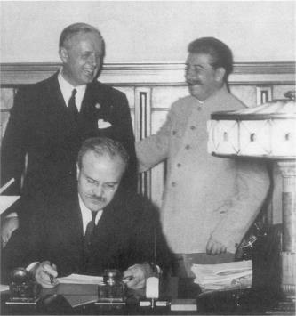

Vyaçeslav Molotov Rus-Alman Saldırmazlık Paktı’nı imzalarken, Ağustos 1939. Arkada, Joachim von Ribbentrop ve Stalin
1941’e kadar, Hitler ve Stalin, geleneksel araçları kullanarak geleneksel olmayan amaçlar peşinde koştular. Stalin, komünist bir dünyanın Kremlin’den yönetileceği günü bekledi. Hitler Alman üstün ırkı tarafından yönetilecek, ırk bakımından saflaştırılmış bir çılgın imparatorluk hayalini, kitabı Mein Kampf’ta ana hatları ile açıkladı. Bunlardan daha devrimci hayaller düşünülemezdi. Diğer taraftan, Hitler ve Stalin’in kullandığı ve 1939 Paktı ile zirve noktasına varan araçlar, XVIII. yüzyıl devlet yönetimi ile ilgili herhangi bir bilimsel incelemeden alınabilirdi. Nazi-Sovyet Paktı, bir yönden Polonya’nın Büyük Frederick, Büyük Katerina ve İmparatoriçe Maria Teresa tarafından 1772’deki bölünmesinin bir tekrarıydı. Ancak bu hükümdarlara benzemeyen bir şekilde, Hitler ve Stalin, ideolojik bakımdan birbirlerine düşmandılar. Polonya’nın ortadan kaldırılmasındaki ortak ulusal çıkarları, bir müddet için ideolojik farklılıklarını ezip geçti. 1941 ‘de paktları yıkılınca, insanlık tarihinin en büyük kara savaşı, hem de tek bir insanın kararı ile patlamış oldu. XX. yüzyıl gibi halk iradesi ve kişisel olmayan güçlerin egemen olduğu bir yüzyılın, birkaç kişi tarafından şekillendirilmesi ve tek bir kişinin bertaraf edilmesi ile en büyük felaketinin önlenebileceği gerçeği az şaşılacak şey değildir.
Alman ordusu bir aydan daha az bir zaman içinde Polonya’yı yerle bir ederken, kuvvetleri azaltılmış Alman tümenleri karşısındaki Fransız kuvvetleri, Majino Hattı’nın gerisinden hareketsiz seyrediyorlardı. Uygun olarak “sahte savaş” adıyla anılan bir dönem başladı ki, bu dönemde Fransa’nın morali tam olarak bozuldu. Yüzlerce yıl boyunca Fransa belli politik amaçlar uğruna –örneğin Orta Avrupa’yı bölünmüş olarak tutmak veya I. Dünya Savaşı’nda olduğu gibi Alsace-Lorraine’i geri almak gibi– savaşlar yapmıştı. Şimdi Fransa’nın tamamen istila edilmiş ve savunmak için parmağını bile oynatmadığı bir ülke için savaş yapması bekleniyordu. Gerçekte, Fransa’nın morali bozulmuş halkı bir fait accompli ile ve stratejiden yoksun bir savaşla karşı karşıyaydı.
Büyük Britanya ve Fransa, Birleşik Devletler ve Rusya yanlarında olduğu halde hemen hemen savaşı kaybettikleri bir ülkeye karşı yeni bir savaşı kazanmayı nasıl ümit edebiliyorlardı? Fransızlar, sanki İngilizlerin, Almanya’yı abluka altına alıp Hitler’i teslim olana kadar sıkıştırması için Majino Hattı’nın gerisinde beklemek mümkünmüş gibi davranıyorlardı. Fakat Almanya, bu yavaş yavaş boğulma karşısında niçin hareketsiz duracaktı? Belçika üzerinden yol tamamen açık tüm bir Alman ordusu ile alınabilecek durumda iken ve artık Doğu Cephesi olmadığına göre, niçin Majino Hattı’na saldıracaktı? Polonya harekâtından alınan ders tamamen bunun aksi olsa da eğer savunma, savaşta Fransız kurmaylarının inandığı kadar belirleyici bir rol oynayacaksa, Fransa’yı, birincinin yaraları henüz sarılmamışken, bir kuşak içinde ikinci bir yıpranma savaşından başka ne gibi bir kader bekleyebilirdi?
Fransa beklerken, Stalin stratejik fırsatı yakaladı. Doğu Avrupa’nın bölünmesi ile ilgili gizli protokol daha uygulamaya konmadan, Stalin revize edilmesini istedi. Stalin, topraklarını dağıtan bir XVIII. yüzyıl prensi umursamazlığı ile ve self-determinasyona hiç aldırmadan, Nazi-Sovyet Paktı’nın imzalanmasından bir ay geçmeden Almanya’ya yeni bir anlaşma öneriyordu: Gizli Protokol’e göre, Almanya’ya bırakılan Litvanya karşılığında, Sovyetlere bırakılan Varşova ile Curzon Hattı arasındaki Polonya topraklarını takas etmek istiyordu. Doğal olarak Stalin’in amacı, Leningrad için ek bir tampon bölge oluşturmaktı. Stalin, jeostratejik manevralarının, Sovyet güvenliğinin gerekleri dışında, her hangi bir haklılık unsuru taşıyıp taşımadığı üzerinde hiç durmuyordu. Hitler, Stalin’in önerisini kabul etti.
Stalin, Gizli Protokol’ün sonuçlarını toplamakta zaman kaybetmedi. Daha Polonya’daki savaş bütün şiddeti ile devam ederken, Sovyetler Birliği üç küçük Baltık ülkesine, toprakları üzerinde askeri tesisler kurmak hakkı dâhil, askeri bir ittifak yapma önerisinde bulundu. Batı’dan herhangi bir yardım görmeyen küçük cumhuriyetlerin, bağımsızlıklarını yitirme yolundaki bu ilk adımı atmaktan başka alternatifleri yoktu. 7 Eylül 1939’da, savaş patladıktan üç haftadan daha az bir zaman sonra, Kızıl Ordu, Polonya’nın Sovyet nüfuz bölgesine ayrılmış olan dilimini işgal etti.
Kasımda sıra Finlandiya’ya gelmişti. Stalin, Finlandiya toprakları üzerinde askeri üs talebinde bulundu ve Leningrad’a yakın Karelya Isthmus’un teslim edilmesini istedi. Fakat Finlandiya çetin ceviz çıktı. Sovyet talebini reddetti ve Stalin savaş açınca da savaştı. Her ne kadar Fin kuvvetleri, Stalin’in geniş siyasi temizlik hareketinden zarar görmüş olan Kızıl Ordu’ya ağır kayıplar verdirdiyse de, sonucu sayısal üstünlük belirledi. Birkaç aylık kahramanca direnişten sonra, Finlandiya Sovyetler Birliği’nin ezici üstünlüğüne dayanamadı.
İkinci Dünya Savaşı’nın büyük stratejisi kavramı içinde düşünüldüğünde, Rus-Fin savaşı, esas oyunun dışında kalan küçük bir oyundu. Bununla beraber, bu savaş Fransa ve Büyük Britanya’nın stratejik gerçeklerle olan bağlantılarını ne derece kaybettiklerini göstermesi bakımından faydalı oldu. Finlilerin bastırması sonucu düşmanın geçici bir süre için kımıldanamaz hale gelmesiyle gözleri kamaşan Londra ve Paris, Sovyetler Birliği’nin belki de Mihver Devletleri’nin (ki aslında Sovyetler Birliği Mihver’e bağlı değildi) yumuşak karnı olduğu şeklindeki tehlikeli spekülasyona vardılar, İsveç ve Kuzey Norveç üzerinden Finlandiya’ya 30.000 kişilik bir kuvvetin gönderilmesi için hazırlıklar yapıldı. Bu birlikler, yol üzerinde Kuzey Norveç limanı Narvik’ten Almanya’ya gönderilen Kuzey Norveç ve İsveç demir cevherinin de yolunu keseceklerdi. Bu ülkelerden hiçbirinin onlara transit geçiş hakkı vermeye hazır olmaması gerçeği ise, Fransız ve İngiliz planlamacılarının şevkini kıramadı.
Müttefiklerin müdahale tehdidi, Finlandiya’ya, ilk Sovyet taleplerinden daha iyi bir anlaşma sağlamış olabilir; fakat sonuçta, hiçbir şey Stalin’in Sovyet savunma hattını Leningrad yakınlarından ileriye sürmesini önleyemezdi. Tarihçiler için çözülemeyen bilmece, Büyük Britanya ile Fransa’nın, Fransızların bütün planlarının boş birer hayal olduğunu gösteren çöküşünden üç ay önce, Sovyetler Birliği ve Nazi Almanya’sı ile nasıl olup da aynı anda savaşa tutuşmaya ramak kalacak duruma gelmeleridir.
1940 Mayıs’ında “sahte savaş” sona erdi. Alman ordusu, 1914’teki manevrasını tekrarlayarak Belçika üzerinden ilerledi. Harekâttaki en önemli fark, esas hücumun sağ kanattan değil de cephenin ortasından yapılmasıydı. On beş yıl süren şüphe ve baştan savmanın bedelini ödeyen Fransa derhal çöktü. Her ne kadar Alman askeri mekanizmasının etkinliği iyi biliniyorsa da, gözlemciler, Fransa’nın bu kadar çabuk bozguna uğramasından şok olmuşlardı. I. Dünya Savaşı’nda, Alman orduları Paris yolunda boşu boşuna dört yıl kaybetmişlerdi; elde edilen her mil çok büyük insan kayıplarına neden olmuştu. 1940’ta, Alman Blitzkrieg’i (yıldırım savaşı) Fransa’yı boydan boya kat etti ve haziran sonunda, Alman birlikleri Champs-Elysees boyunca yürüyordu. Hitler Avrupa’nın efendisi gibi görünüyordu.
Fakat, kendisinden önceki fatihler gibi, Hitler de, bu kadar pervasızca başlattığı savaşı nasıl sona erdireceğini bilmiyordu. Üç seçeneği vardı: Büyük Britanya’yı da yenmeye çalışabilirdi; Büyük Britanya ile barış yapabilirdi veya Sovyetler Birliği topraklarını ele geçirip sonra geniş kaynaklarını kullanarak bütün gücü ile Batı’ya yönelerek Büyük Britanya’nın yıkımını sağlayabilirdi.
1940 yılının yazında, Hitler ilk iki yaklaşımı denedi. 19 Temmuz’da yaptığı kendini öven bir konuşmada, Büyük Britanya ile bir uzlaşma barışı yapmaya hazır olduğunu dolaylı olarak söyledi. Aslında İngiltere’den, savaş öncesi Alman kolonilerini terk etmesini ve kıta işlerine karışmaktan vazgeçmesini istiyordu. Karşılık olarak, İngiliz İmparatorluğu’na güvence verecekti.{430}
Hitler’in önerileri, I. Dünya Savaşı’ndan önceki yirmi yıl boyunca imparatorluk Almanya’sının Büyük Britanya’ya önerdiği şeylerin bir benzeriydi. Tek fark, o zamanki önerilerin dil bakımından daha uzlaştırıcı bir çerçeve içinde kaleme alınmış olması ve İngilizlerin stratejik durumunun çok daha elverişli bulunmasıydı. Belki Hitler, Almanya’nın organize ettiği bir Avrupa’nın nasıl bir şey olacağı hususunda açıklama yapmış olsa idi Almanya ile görüşme yapılması düşüncesi ile ilgilenen Lord Halifax gibi bazı İngiliz liderleri (fakat hiçbir zaman Churchill değil) bununla ilgilenebilirlerdi. Hitler, Büyük Britanya’dan, Almanya için kıta üzerinde tam bir hareket serbestliği isterken, buna verilen geleneksel İngiliz cevabının bir kez daha verilmesine neden oldu. Sir Edward Grey, 1909’da Hitler’den daha aklı başında Alman liderleri tarafından o zaman yapılan benzeri bir öneriye verdiği cevapta (Fransa o zaman da Avrupa’nın başlıca büyük devletlerinden biriydi), Büyük Britanya’nın kıta devletlerini Almanya’ya kurban etmesi halinde, er veya geç kendisinin de İngiliz Adaları’nda saldırıya uğrayacağını belirtmişti. (Bkz. Bölüm 7) Büyük Britanya, imparatorluğu için verilen “güvenceyi” de pek ciddiye alamazdı. Hiçbir Alman lideri, imparatorluğu korumaya gücü yeten herhangi bir devletin onu ele de geçirebileceği şeklindeki İngiliz görüşünü anlayamadı. Bu görüşü, Sir Eyre Crowe meşhur 1907 Memorandumu’nda belirtmişti. (Bkz. Bölüm 7).
Kuşkusuz, Churchill, çok daha sofistike bir adamdı ve savaşın sonunda, Büyük Britanya’nın yine birinci dünya gücü olacağı, hatta ön safta bulunabileceği konusunda hayalleri olamayacak kadar da çok tarih okumuş bir insandı. Almanya veya Birleşik Devletler bu konuda iddialı olacaklardı. 1940 yazında Churchill’in Almanya’ya karşı gösterdiği antipati, Alman hegemonyasına karşı Amerikan hegemonyası lehine bir karar olarak yorumlanabilir. Amerika’nın üstünlüğü de zaman zaman rahatsızlığa neden olabilirdi; fakat en azından onun kültürü ve dili yabancı değildi ve iki ülkenin kaçınılmaz olarak çatışma çıkartan da yoktu. Son olarak, Büyük Britanya ile Amerika arasında, Nazi Almanya’sı ile düşünülemeyecek bir şey olan “özel” bir ilişki kurulması olasılığı da her zaman vardı. 1940 yılının yazında, Hitler bizzat kendisinin casus belli olduğu bir duruma düştü.
Hitler şimdi ikinci seçeneğe döndü ve İngiliz Hava Kuvvetleri’ni yok etmeyi ve gerekirse İngiliz Adaları’nı istila etmeyi düşündü. Fakat bunu ancak düşünmekle kaldı. Çıkarma harekâtı, Almanya’nın savaş öncesi planlamasına dâhil değildi ve plan, çıkarma araçlarının azlığı ve Lufhvaffe’nin (Alman Hava Kuvvetleri) İngiliz Hava Kuvvetleri’ni yok edecek güçte olmaması yüzünden terk edildi. Yaz sonunda, Almanya kendisini Birinci Dünya Savaşı’ndakinden çok farklı olmayan bir konumda buldu: Bütün önemli başarıları kaydetmişti; ancak bunları nihai zafere dönüştüremiyordu.
Kuşkusuz, Hitler stratejik savunma yapmak için çok iyi bir durumdaydı. Büyük Britanya, tek başına Alman ordusuna karşı koyabilecek kadar güçlü değildi; Amerika’nın savaşa girmesi hemen hemen olanaksızdı ve Stalin, her ne kadar müdahale etmeyi düşünebilirse de, sonunda bunu ileri bir tarihe atmak için nasıl olsa bir mazeret bulurdu. Fakat başkalarının harekete geçmesini beklemek Hitler’in doğasına aykırıydı. Bu nedenle, sonunda Sovyetler Birliği’ne saldırıda karar kılması kaçınılmazdı.
1940 Temmuz’unda, Hitler Sovyet saldırısı için ilk kurmay planlarının hazırlanmasını emretti. Generallerine, Sovyetler Birliği yenilir yenilmez, Japonya’nın bütün silahlı kuvvetlerini Amerika üzerine salabileceğini ve bu suretle Washington’un dikkatinin Pasifik’e yönelmiş olacağını söyledi. Amerikan desteği olasılığından yoksun kalacak Büyük Britanya da izole edilmiş olacağından savaşı bırakmak zorunda kalacaktı: “İngilizlerin ümidi, Rusya ve Birleşik Devletler’dedir” diyordu Hitler doğru olarak. “Rusya ümidi hayal kırıklığına uğradığı takdirde, Amerika da elimine edilmiş olacaktır; çünkü Rusya’nın ortadan kaldırılması Uzakdoğu’daki Japon gücünü müthiş artıracaktır...”{431} Ancak Hitler saldırı emrini vermeye henüz tam olarak hazır değildi, ilk önce, Sovyetleri, İngiliz İmparatorluğu’na ortak bir saldırı yapmak için kandırmak ve doğuya dönmeden önce İngilizleri dağıtmak olasılığını araştıracaktı.
Stalin, durumunun nezaketini çok iyi anladı. Fransa’nın çöküşü, Stalin’in ve bütün Batılı askeri uzmanların görüşünün aksine, savaşın I. Dünya Savaşı gibi uzun bir yıpratma savaşı olacağı beklentisini sona erdirdi. Stalin’in en çok ümit ettiği şey olan Almanya ve Batı demokrasilerinin kendilerini tüketmeleri beklentisi boşa çıktı. Büyük Britanya da düşseydi, Alman ordusu doğuya saldırı için serbest kalacaktı ve Hitler, Mein Kampf’ında söylediği gibi Avrupa’nın bütün kaynaklarını kullanabilecek duruma gelecekti.
Stalin, hemen hemen basmakalıp bir tepki gösterdi. Kariyerinin hiçbir döneminde Stalin, tehlike karşısında gerçekten korkmuş olması gereken zamanlarda bile korkuya kapılarak tepki göstermemiştir. Zayıflık belirtisi göstermenin düşmanın şartlarını ağırlaştıracağına inanan Stalin, daima inatla stratejik çıkmazları saklamaya çalışmıştır. Hitler, batıdaki zaferini Sovyetler Birliği üzerinde baskı yaparak kullanmaya kalkışmış olsaydı, Stalin, kendisinden ödün alınmasının çok zor ve acı verici olduğunu ona gösterecekti. Ancak insana işkence edecek derecede bir hesap adamı olan Stalin, Hitler’in nevrotik kişiliğini hesaba katmadı ve onun bu yol ne kadar pervasız olursa olsun, iki cephede birden savaşı göze alabileceğini hiç düşünmedi.
Stalin iki uçlu bir strateji seçti. Gizli protokolle kendisine vaat edilen ganimetin geri kalan bölümünü toplamayı hızlandırdı. Haziran 1940’ta, Hitler, Fransa ile uğraşırken, Stalin, Romanya’ya bir ültimatom vererek Besarabya’yı boşaltmasını ve ayrıca Bukovina’yı istedi. Sonuncusu Gizli Protokol’e dâhil değildi ve Rusya burayı alırsa, Sovyet güçleri Tuna Nehri’nin Romanya sınırı boyunca yerleşmiş olacaktı. Aynı ay, halkın ancak yüzde yirmisinin katıldığı uydurma bir seçimle Baltık devletlerini Sovyetler Birliği’ne kattı. Bu süreç tamamlandığında, Stalin Rusya’nın Birinci Dünya Savaşı sonunda yitirmiş olduğu bütün toprakları geri almıştı ve böylece İtilaf Devletleri, Almanya ve Sovyetler Birliği’ni 1919 Barış Konferansı dışında tutmanın bedelinin son taksitini de ödemiş oluyordu.
Stratejik durumunu kuvvetlendirmekle uyumlu olarak, Stalin, Hitler’in savaş makinesine hammadde sağlayarak komşusunu yatıştırma çabalarına devam etti. 1940 yılının Şubat ayında, Almanya Fransa’yı yenmeden önce, Stalin’in de hazır bulunduğu bir ticaret anlaşması yapılarak, Sovyetler Birliği’nin Almanya’ya büyük miktarda hammadde vermesi sağlanmıştı. Almanya, karşılık olarak kömür ve mamul eşya veriyordu. Sovyetler Birliği anlaşma hükümlerini çok titiz bir şekilde uyguluyordu ve hatta teslim ettiği hammaddenin miktarını artırıyordu bile. Gerçekten de Almanya’nın saldırısını başlattığı son ana kadar, hammadde yüklü Sovyet demiryolu vagonları gümrük kapısından Almanya’ya giriyordu.
Ancak Stalin’in hiçbir hareketi, Almanya’nın Orta Avrupa’da egemen güç olması jeopolitik gerçeğini değiştiremezdi. Hitler, Gizli Protokol hükümleri ötesinde herhangi bir Sovyet genişlemesine hoşgörü ile bakmayacağını açıkça belirtti. 1940 Ağustosu’nda, Almanya ve İtalya, Stalin’in artık kendi nüfuz bölgesinde saydığı Romanya üzerinde baskı yaparak Mihver Devletleri’nin neredeyse müttefiki olan Macaristan’a Transilvanya’nın üçte ikisini geri vermesini istediler. Romanya’nın petrol kaynaklarını korumaya kararlı olan Hitler, eylül ayında Romanya’ya güvence vererek duruma daha da açıklık getirdi ve güvencesini desteklemek için bir motorize birliği ve hava kuvvetini Romanya’ya gönderdi.
Aynı ay, Avrupa’nın diğer ucunda gerginlik iyice arttı. Gizli Protokol’ün Finlandiya’yı Sovyet nüfuz alanına bırakmasına rağmen, Finlandiya Alman birliklerinin Kuzey Norveç’e gitmek üzere topraklarından geçmesine izin verdi. Bundan başka, Finlandiya’yı Sovyet baskısına karşı kuvvetlendirmekten başka amacı olamayacak önemli Alman silah yardımları da oluyordu. Molotov Berlin’den daha somut bilgiler istediği zaman kendisine kaçamak cevaplar verildi. Sovyet ve Alman birlikleri, Avrupa’nın bir ucundan öbür ucuna birbirlerini itip kakmaya başladılar.
Stalin için en uğursuz gelişme, 27 Eylül 1940’ta yaşandı. Almanya, İtalya ve Japonya aralarında bir Üçlü Pakt imzaladılar. Buna göre, taraflar İngiliz tarafına katılacak herhangi bir yeni ülkeye savaş açmayı taahhüt ediyorlardı. Emin olmak için, tarafların her birinin Sovyetler Birliği ile ilişkileri bu anlaşma dışında tutulmuştu. Bu, Japonya’nın ilk darbeyi kim vurmuş olursa olsun, bir Alman-Sovyet savaşına katılma yükümlülüğü olmaması, fakat Amerika’nın Almanya’ya savaş açması halinde Amerika ile savaşmak zorunda olduğu anlamına geliyordu. Her ne kadar Üçlü Pakt görünürde Washington’u hedef almışsa da, Stalin’in kendisini güvencede hissetmesi için bir neden yoktu. Hukuki hükümler ne olursa olsun, Üçlü Pakt üyelerinin bir noktada kendisine döneceklerini beklemek durumundaydı. Pakt tamamlanıncaya kadar bu konudaki görüşmeler hakkında kendisine bilgi bile verilmemiş olması, Stalin’in bu işten dışlandığının kanıtıydı.
1940 yılının sonbaharında gerginlik o derece hızla yükseldi ki, iki diktatör birbirlerini açığa düşürmek için son diplomatik çabalarını harcıyorlardı. Hitler’in amacı, Stalin’i kandırıp İngiliz İmparatorluğu’na ortak bir saldırı düzenleyerek Almanya’nın arkasını güvenceye aldıktan sonra daha emin bir şekilde Stalin’e yönelmekti. Stalin, Hitler’in amacı doğrultusunda ilerlerken bir yerde ayağının dolanacağı ümidiyle zaman kazanmaya bakıyordu ve aynı zamanda bu süreçten ne kurtarabileceğini düşünüyordu. Üçlü Pakt’ın hemen sonrasında Hitler ile Stalin’in yüz yüze gelmesi için harcanan çabalardan bir sonuç çıkmadı. Her iki lider de ülkesini terk edemeyeceği gerekçesi ile bu toplantıdan kaçınmak için ellerinden geleni yaptılar. Mantıki buluşma yeri olan sınırdaki Brest-Litovsk’un sırtında ise çok ağır bir tarihi yük vardı.
13 Ekim 1940 tarihinde, Ribbentrop, Stalin’e uzun bir mektup yazarak bir yıl önceki Moskova ziyaretinden sonra gelişen olayların yorumunu yaptı. Bir dışişleri bakanının, kendisi ile aynı düzeydeki meslektaşına değil de, hükümette resmi bir görevi bile olmayan lidere mektup yazması alışık olunmayan bir protokol ihlaliydi. (Stalin’in tek titri, Komünist Partisi Genel Sekreteri’ydi).
Ribbentrop’un mektubu, diplomatik incelik yoksunluğunu, debdebeli bir üslupla gidermeye çalışıyordu. Finlandiya ve Romanya konularında Alman-Sovyet anlaşmazlıklarının suçunu İngilizlerin üzerine atıyor, fakat Londra’nın böyle bir marifeti nasıl becerdiğini açıklamıyordu. Israrla Üçlü Pakt’ın Sovyetler Birliği aleyhine olmadığım söylüyordu. Gerçekte, Sovyetler Birliği, savaştan sonra, ganimetin Avrupalı diktatörler ile Japonya arasında paylaşılmasına katılabilecekti. Ribbentrop mektubunu, Molotov’u iade-i ziyaret için Berlin’e davetle sonuçlandırdı. Bu vesileyle, Sovyetler Birliği’nin Üçlü Pakt’a katılma olasılığının tartışılabileceğini ileri sürdü.{432}
Stalin, henüz alınmamış toprakların ganimetinin paylaşılmasına katılmayacak veya başkaları tarafından düzenlenmiş bir çatışma cephesine girmeyecek kadar tedbirliydi. Ancak Büyük Britanya’nın yenilmesi halinde ganimeti Hitler’le paylaşma seçeneğini açık tutmak istiyordu. Nitekim, 1945’te savaşın son aşamasında Japonya’ya yüklü bir bedel karşılığında savaş açtığı zaman böyle yapmıştı. 22 Ekim’de, Stalin Ribbentrop’un mektubuna neşeli bir üslupla yazılmış bir mektupla cevap verdi. Mektubunda “son olaylar hakkında bilgi veren analizlerinden dolayı” Ribbentrop’a teşekkür eden Stalin, bu olaylar hakkında kişisel değerlendirmesini yapmaktan kaçındı. Belki de protokol kurallarını zorlamakta onunla yarışabileceğini göstermek için Molotov’un Berlin’e davetini kabul ediyor ve tek taraflı olarak çok erken bir tarihi, 10 Kasım’ı (üç haftadan daha az bir zaman sonra) seçiyordu.{433}
Hitler, başka bir yanlış anlama yaratacak şekilde öneriyi hemen kabul etti. Stalin, Hitler’in çabuk kabulünü şuna yordu: Sovyetlerle olan ilişkileri Almanya için bir yıl önceki kadar önemlidir; dolayısıyla sert taktikleri meyvesini vermektedir. Oysa Hitler’in aceleciliğinin nedeni, 1941 baharında Sovyetler Birliği’ne saldıracaksa, planını uygulamaya devam etmesinin gerekli olmasıydı.
Bu iki olası ortağın birbirlerine karşı duydukları güvensizliğin derinliği, daha toplantılar başlamadan ortaya çıktı. Molotov, kendisini Berlin’e götürmek için sınıra gönderilen trene binmeyi reddetti. Sovyet delegasyonu, açıkça Almanların lüks vagonlarının bu lükse karşılık dinleme aletleriyle dolu olacağını düşünüyordu. (Sonuçta, Alman vagonları Sovyet vagonlarının arkasına bağlandı. Sovyet vagonları, sınırdan itibaren daha dar olan Avrupa raylarına göre ayarlanabilecek şekilde yapılmıştı).
Görüşmeler 12 Kasım’da başladı. Hitler’den daha dengeli kimseleri bile sinirlendirme yeteneğine sahip olan Molotov, yıpratıcı taktiklerini Nazi liderliğinin önünde fazlasıyla sergilemeye başladı. Doğuştan olan merhametsizliği, Hitler’den daha çok çekindiği Stalin korkusu ile de kuvvetlenmişti. Molotov’un asıl ilgili olduğu şey, bütün Sovyet dönemi boyunca tipik olarak bütün Sovyet diplomatlarında görülen bir kaygı olan kendi iç konumuydu ve durum Stalin döneminde özellikle en had safhada idi. Sovyet görüşmeciler, uluslararası arenanın değil, kendi iç kısıtlamalarının daha çok farkında göründüler.
Dışişleri bakanları pek seyrek olarak Politbüro üyesi olduğundan (Gromiko, on altı yıl dışişleri bakanlığı yaptıktan sonra 1973’te Politbüro üyesi olmuştur), içerideki durumları zayıftı ve görüşmeler ters giderse daima günah keçisi olmak tehlikesiyle karşı karşıyaydılar. Bundan başka, Sovyetler, tarihin nihai olarak onların yanında olduğunu varsaydıklarından, sorunlara açık bir çözüm bulmaktan çok, onlar karşısında bir duvar kesilerek uzlaşmaz bir tavır takınmak eğiliminde olurlardı. Sovyet diplomatlarla yapılan her görüşme bir dayanıklılık testine dönüşürdü; Sovyet görüşmecinin, karşı taraftan koparılabilecek en son ödünü de kopardığı inancına varmadan ve Moskova’da telgrafları okuyanlar da bu kanıya varmadan bir ödün vermesi olanaksızdı. Bu bir çeşit diplomatik gerilla savaşında, Sovyet diplomatlar, ısrar ve baskı ile koparabilecekleri şeyleri koparmışlar, fakat gerçek bir hamle yapma fırsatını kaçırmışlardır. Sovyet görüşmeciler ve bu oyunun üstadı olan Gromiko, önceden belirlenmiş fikirleriyle sorunu çözmek için sabırsızlanan karşı taraf görüşmecilerini kullandıkları taktiklerle yıpratmakta uzmandılar. Diğer taraftan, ormanı değil ağaçları görmek eğilimindeydiler. Bu yüzden, 1971’de Nixon’ın Beijing’e açılmasını geciktirebilecek olan bir zirve toplantısı fırsatını, anlamsız ön şartlar üzerinde aylarca çekişmek suretiyle kaybettiler. Washington Çin seçeneğini elde eder etmez, bütün bu çekiştikleri ön şartların hepsinden hemen vazgeçtiler.
Dünyada Hitler ile Molotov kadar birbiriyle konuşması olanaksız olan iki insan yoktu. Hitler hiçbir zaman görüşmeye uygun bir yapıda değildi; uzun monologlarla karşısındakini baskı altına alır, karşı tarafın cevap vermesine izin verirse de verilen cevaplan hiç dinlemezdi. Yabancı liderlerle görüşürken, Hitler, genellikle genel prensibi heyecanlı bir şekilde ifade etmekle yetinirdi. Gerçek görüşmelere katıldığı birkaç olayda –Avusturya Başbakanı Kurt von Schuschnigg veya Neville Chamberlain ile yapılan görüşmeler– kabadayı bir tavır sergilemiş, önceden hazırladığı talepleri ortaya koymuş ve bunlarda çok seyrek olarak değişiklik yapmıştır. Diğer taraftan Molotov, prensiplerden çok onların uygulanması ile ilgiliydi ve uzlaşma olasılığı da yoktu.
Kasım 1940’ta Molotov kendisini gerçekten zor bir durumda buldu. Stalin, hoşnut olması zor bir liderdi; hem bir Alman zaferine yardım etmekte isteksizdi, hem de Almanya Sovyet yardımı olmadan Büyük Britanya’yı yenerse Hitler’in zaferlerinden payını alma fırsatını kaçırmak istemiyordu. Sonuç ne olursa olsun, Stalin Versay düzenlemesine hiçbir zaman dönmeme kararında idi ve her adımını dikkatle atarak durumunu korumaya çalıştı. Gizli protokol ve onu izleyen olaylar, kendince uygun olan düzenlemenin ne olduğu hakkında Almanlara açık, hem de çok açık bir fikir vermişti. Bu anlamda Molotov’un Berlin seyahati, konunun daha iyi incelenmesi için bir fırsat olarak görülmüştür. Demokrasilere gelince, Stalin 1940 Temmuz’unda yeni İngiliz Büyükelçisi Sir Stafford Cripps’in ziyaretinin yarattığı fırsatı, Versay düzenine dönme olasılığını reddetmek suretiyle kullanmıştı. Cripps, Fransa’nın düşüşünün, Sovyetler Birliği’nin güç dengesinin korunması için devreye girmesini zorunlu duruma getirdiğini söyleyince, Stalin soğuk bir şekilde şöyle cevap verdi:
“Adına Avrupa güç dengesi denilen şey, yalnızca Almanya’yı değil Sovyetler Birliği’ni de baskı altında tutmuştur. Bu nedenle, Sovyetler Birliği eski Avrupa güç dengesinin yeniden kurulmasını önlemek için elinden gelen her önlemi alacaktır.”{434}
Diplomatik dilde, “her önlem” genellikle savaş tehdidini de kapsar.
Molotov için göze alınan riskler çok yüksekti. Hitler’in geçmişi, onun 1941 yılını büyük bir kampanya başlatmadan geçirmeyeceğine en küçük bir şüphe bırakmadığından, Stalin, İngiliz İmparatorluğu’na saldırıda ona katılmazsa Sovyetler Birliği’ne saldırabilirdi. Her ne kadar Stalin vadenin bu kadar kısa olduğunun farkında değilse de, Molotov ödünlerle kandırma gibi gösterilen de facto bir ültimatom ile karşı karşıyaydı.
Ribbentrop konuşmaya, Almanya’nın zaferinin niçin kaçınılmaz olduğunu anlatmakla başladı. Molotov’dan Üçlü Pakt’a katılmasını ısrarla istedi. Paktın, başlangıçta Anti-Komintern Pakt olarak planlanmış olması gerçeği onu caydırmadı. Ribbentrop, bu baz üzerinde “dünyada çok geniş hatlar üzerinde Rus, Alman, İtalyan ve Japon nüfuz bölgelerinin saptanmasının”{435} olası olduğunu belirtti. Ribbentrop’a göre, bu durum, anlaşmazlığa neden olmayacaktı; çünkü ortakların her biri her şeyden önce güneye doğru genişlemek arzusundaydı. Japonya Güneydoğu Asya’ya, İtalya Kuzey Afrika’ya doğru uzanacak, Almanya ise Afrika’daki eski sömürgelerini geri isteyecekti. Ribbentrop son olarak, zekâsını vurgulamak için yaptığı birtakım dolambaçlı konuşmalardan sonra, Sovyet Rusya’ya ayrılan ödülü açıkladı: “... uzun zamandan beri Rusya için önemli olan açık denizlere doğal bir çıkış yolu bulmak maksadıyla Rusya’nın da güneye yönelip yönelmeyeceği...”{436}
Hitler’in konuya ilişkin açıklamaları hakkında aşağı yukarı bir fikir sahibi olan herkes bilirdi ki bunlar saçmaydı. Afrika, Nazilerin ilgilendiği konular arasında aşağı sıralarda yer alırdı. Hitler de Afrika’ya özel bir ilgi göstermediği gibi Mein Kampf’ı yeter derecede okumuş olan Molotov da farkındaydı ki, Hitler’in peşinde olduğu Lebensraum (Yaşama alanı) Rusya’daydı. Ribbentrop’un açıklamasını sessizce dinleyen Molotov, sanki önemsiz bir şeymiş gibi bu açık denize çıkışta hangi denizin kastedildiğini cüretkâr bir şekilde sordu. Bir kez daha dolambaçlı ve can sıkıcı bir şekilde cevap veren Ribbentrop, sanki burası Almanya’nın mülküymüş gibi Basra Körfezi’nin adını verdi:
“Sorun, şimdi onların gelecekte de birlikte iyi işler yapıp yapmayacakları... uzun vadede Rusya için en avantajlı denize çıkışın Basra Körfezi ve Arap Denizi yönünde bulunup bulunmayacağı ve aynı zamanda Almanya’nın ilgilenmediği Asya’nın bu bölgesinde Rusya’nın bazı emellerinin gerçekleştirilip gerçekleştirilmeyeceği sorunudur.”{437}
Molotov, bu kadar abartmalı bir öneri ile ilgilenmedi. Almanya önerilen toprakların sahibi değildi ve Sovyetler Birliği’nin bu toprakların fethedilmesinde Almanya’ya ihtiyacı yoktu. Üçlü Pakt’a girmeye prensipte istekli olduklarını söyleyen Molotov, “nüfuz bölgelerinin çizilmesinin dikkat isteyen bir iş olduğu ve uzun zamanı gerektirdiği”{438} sözleri ile olumlu görüşüne derhal bir rezerv koymuş oldu. Kuşkusuz bu iş bir Berlin seyahati ile tamamlanamazdı ve Ribbentrop tarafından Moskova’ya bir iade ziyareti dâhil geniş görüşmeleri gerektiriyordu.
O gün öğleden sonra, Molotov yeni tamamlanan mermer başbakanlık binasında Hitler tarafından kabul edildi. Moskovalı proleter bakanın hayranlığını kazanmak için her çeşit önlem alınmıştı. Molotov, iki tarafında birkaç metre arayla uzun boylu SS’lerin siyah üniformaları içinde hazır ol vaziyetine geçip kollarını kaldırarak Nazi selamı ile konuğu selamladıkları geniş bir koridordan geçirildi. Hitler’in odasının kapısı tavana kadar yükseliyordu ve özellikle uzun boylu iki SS kapıyı açarken kollarını kaldırınca oluşturulan takın altından geçirilen Molotov, Hitler’in huzuruna kabul edildi. Muazzam büyüklükteki odanın en uzak köşesine yerleştirilmiş masasında oturan Hitler, birkaç dakika sessizce konuklarını süzdükten sonra ayağa fırladı ve hala tek kelime söylemeden Sovyet delegasyonunun her bir üyesinin elini sıktı. Konuklar gösterilen yerlere oturtulurken bazı perdeler aralandı ve Ribbentrop ile birkaç danışmanı da gruba katıldılar.{439}
Konuklar Nazi usulü ihtişamla etkilendikten sonra, Hitler toplantının amacıyla ilgili düşüncesini söyledi. Ortak uzun vadeli strateji konusunda anlaşmayı önerdi; çünkü Almanya ve Sovyetler Birliği’nin “yöneticileri, ülkelerini belli bir yöne götürecek şekilde bağlantı yapmaları için yeterli yetkiye sahiptirler.”{440} Hitler’in aklındaki, Sovyetlerle birlikte bütün Avrupa ve Afrika için bir nevi ortak bir Monroe Doktrini kurmak ve sömürge topraklarını aralarında bölüşmekti.
Viyana operetlerinin ihtişam anlayışından esinlenen karşılanmasından hiç etkilenmemiş olduğunu gösteren Molotov, birtakım kesin sorular sormaya başladı: Üçlü Pakt’ın nihai amacı nedir? Hitler’in kendi kendine ilan ettiği Yeni Düzen’in tanımı nedir? Büyük Asya Nüfuz Bölgesi ne demektir? Balkanlar’daki Alman niyetleri nedir? Finlandiya’yı Sovyet nüfuz bölgesinde bırakan anlayış hâlâ geçerli midir?
Şimdiye kadar kimse Hitler’le bu şekilde konuşmamıştı veya onu soru cevap şeklinde bir konuşmaya tabi tutmamıştı. Hitler ordularının erişebileceği herhangi bir bölgede, –kuşkusuz Avrupa’da asla– Alman hareket serbestliğine bir sınır getirmek istemiyordu.
Hitler, ertesi gün yapılan görüşmeden önce Spartalılara özel bir debdebe ile verilen bir öğle yemeği verdi; fakat herhangi bir ilerleme kaydedilmedi. Hitler, kendine özgü uzun monoloğu ile başlayan görüşmede dünyayı Stalin’le nasıl bölüşeceğini açıkladı:
“İngiltere’nin fethedilmesinden sonra, İngiliz imparatorluğu, iflas eden dünya çapındaki dev bir mülk gibi parçalara bölünecek... iflas eden bu mülkte, Rusya için kışları buzlanmayan bir limandan açık okyanusa çıkış olacaktır. Şimdiye kadar, 45 milyonluk İngiliz azınlığı, 600 milyonluk İngiliz imparatorluğu çoğunluğunu yönetti. Kendisi bu 45 milyonluk azınlığı ezmek üzere idi...
Bu şartlar altında dünya çapında bir perspektif ortaya çıktı... Bu problemlerin çözülmesine Rusya’nın katılması bir düzenlemeyi gerektirmektedir, iflas eden mülkle ilgilenen bütün ülkeler, aralarındaki bütün anlaşmazlıklara bir son verecek ve dikkatlerini İngiliz İmparatorluğu’nun bölünmesine yoğunlaştıracaklardır. “{441}
Aynı fikirde olduğunu alaycı bir şekilde söyleyen Molotov durumu Moskova’ya bildireceği sözünü verdi. Hitler’in, Sovyetler Birliği ile Almanya arasında birbiri ile çatışan çıkarlar olmadığı görüşünü paylaşan Molotov, bunu uygulamada denemek için Almanya’nın Romanya’ya verdiğine benzer şekilde Sovyetler Birliği de Bulgaristan’a güvence verirse Almanya’nın tepkisinin ne olacağını sordu (Böyle bir güvence, Almanya’nın Balkanlar’da bundan sonraki genişlemesini önleyecekti.) Sovyetler Birliği’nin Finlandiya’yı topraklarına katması hakkında Almanya ne düşünüyordu? Self-determinasyonun, Sovyet dış politikasının bir ilkesi olmadığı açıktı ve Stalin, Alman müdahalesi olmayacaksa Rus olmayan halkları topraklarına katmakta herhangi bir tereddüt göstermeyecekti. Yalnız topraklarla ilgili düzenleme değil, Versay düzenlemesinin ahlaki prensipleri de ölmüştü.
Toplantıdaki gergin hava, Hitler’in Bulgaristan’ın bir Sovyet ittifakı istediğine dair elde bir bilgi olmadığına işaret etmesi ile de dağılmadı. Finlandiya’nın ilhakını da Gizli Protokol’e dâhil olmadığı gerekçesiyle reddetti. Oysa Molotov’un Berlin’i ziyaretinin esas amacı, Gizli Protokol’ün dışına çıkma olasılığını araştırmaktı. Toplantı tatsız bir şekilde sona eriyordu. Hitler ayağa kalkarken, bir İngiliz hava saldırısı olasılığı hakkında bir şeyler mırıldandı, Molotov da “Sovyetler Birliği’nin, büyük bir devlet olarak Avrupa ve Asya’nın büyük sorunlarından uzak kalamayacağı”{442} esas mesajını tekrarladı. Hitler, isteklerini kabul etseydi Sovyetler Birliği’nin nasıl karşılık vereceği konusu üzerinde durmadan, Stalin’e durumu rapor ettikten sonra liderinin uygun nüfuz bölgesi hakkındaki fikirlerini Hitler’e aktaracağı sözünü verdi.
Hitler’in canı o kadar çok sıkılmıştı ki, Sovyet Büyükelçiliği’nde Molotov’un verdiği akşam yemeğine katılmadı. Diğer Nazi liderlerinin çoğu gelmişti. Ziyafet bir İngiliz hava saldırısı ile yanda kesildi. Sovyet Büyükelçiliği’nin sığınağı olmadığı için konukların her biri bir tarafa kaçıştı. Nazi liderler limuzinlerle uzaklaştılar, Sovyet delegasyonunu Bellevue Kalesi’ne taşıdılar (Alman cumhurbaşkanının Berlin’deyken kullandığı konut). Ribbentrop da Molotov’u yakındaki sığınağına götürdü. Orada Ribbentrop, Sovyetlerin Üçlü Pakt’a girmesiyle ilgili karar taslağım Molotov’a gösterdi; fakat anlamıyordu ki, Molotov’un Hitler’e söyledikleri dışında bir şey söylemeye ne eğilimi, ne de yetkisi vardı. Molotov kendi açısından, karar taslağı üzerinde durmayarak, Hitler’in cevap vermekten kaçındığı her konuyu tekrar gündeme getirdi ve Sovyetler Birliği’nin herhangi bir Avrupa sorunundan dışlanamayacağını ısrarla tekrarladı. Özellikle Yugoslavya, Polonya, Yunanistan, İsveç ve Türkiye’yi belirtirken, Ribbentrop ve Hitler’in önüne koyduğu Hint Okyanusu etrafındaki büyük topraklardan dikkati çekecek bir şekilde uzak durdu.{443}
Molotov’un cüretkâr ve inatçı tutumunun nedeni, hemen hemen çözülemeyecek bir durumu çözmek için Stalin’e zaman kazandırmaktı. Hitler ona, Büyük Britanya’yı yenmek için ortaklık öneriyordu. Fakat bu işten sonra, Sovyetler Birliği’nin hepsi eski Anti-Komintern Pakt üyesi olan Üçlü Pakt’ın ortakları ile yapayalnız kalacağını düşünmek için hayal gücünü çok kullanmasına gerek yoktu. Diğer taraftan, Sovyet yardımı olmadan Büyük Britanya yenilirse, Hitler’le kaçınılmaz olan çatışma için Sovyetler Birliği’nin stratejik durumunu iyileştirmesi iyi olurdu.
Sonunda, Stalin hangi yolu izleyeceğine karar vermedi. 25 Kasım’da, Molotov Üçlü Pakt’a katılmak için Stalin’in öngördüğü şartları Ribbentrop’a bildirdi: Almanya Finlandiya’dan birliklerini çekecek ve bu ülkede Sovyetler Birliği’ne hareket serbestliği tanıyacak; Bulgaristan Sovyetler Birliği ile bir askeri ittifaka katılacak ve Sovyet üslerine izin verecek; Türkiye’den, Çanakkale Boğazı dâhil toprakları üzerinde Sovyet üsleri kurulmasını kabullenmesi istenecekti. Sovyetler Birliği’nin stratejik amaçlarını kuvvet kullanarak yerine getirmek istemesi halinde, Almanya karışmayacaktı. Hitler’in kendi önerisi olan Batum ve Bakü’nün güneyinin Sovyet çıkar alanı olması teklifini ise, Stalin, İran ve İran Körfezi’ni de içine alacak şekilde tanımlıyordu. Japonya’ya gelince, bu ülke Sahalin adası üzerindeki maden çıkarma hakkı iddiasını terk edecekti.{444} Stalin, bütün bunlarla orantılı olarak herhangi bir Sovyet ödünü önermediği için Almanya’nın doğuya doğru genişlemesini önleyecek olan bu şartların kabul edilmeyeceğini biliyordu.
Dolayısıyla Stalin’in Hitler’e cevabı, Sovyet çıkar bölgesinin neresi olduğu hususunda Hitler’e bir işaret vermesi ve hiç olmazsa diplomatik yolla bu amacın gerçekleşmemesi için direnileceği yolunda bir uyarıda bulunması bakımından faydalı olmuştur. Sonraki on yıl içinde, çarların taktiğini kullanan Stalin, yerine göre anlaşmalarla yerine göre kuvvetle bu çıkar bölgesini kurmak için çalışmıştır. 25 Kasım memorandumunda ana hatları belirtilen hedeflerin izleyicisi olmuştur; önce Hitler’e karşı ve son safhada da demokrasilere karşı bunları izlemiştir. Sonra, hayatının sonuna doğru Stalin, her zaman Sovyet nüfuz bölgesi olarak tanımladığı alanları korumak için demokrasilerle büyük bir pazarlığın tam kıyısında görülmüştür (Bkz. Bölüm 20).
Hitler için artık ok yaydan çıkmıştı. Molotov’un Berlin’e gelişi gibi erken bir tarihte, Hitler, Sovyetler Birliği’ne saldırı için bütün hazırlıkların yapılması emrini vermiştir. Uygulama planı onaylanana kadar nihai karar ertelenecekti.{445} Hitler’in aklına takılan soru, Sovyetler Birliği’ne, Büyük Britanya’yı yendikten sonra mı, yoksa yenmeden önce mi saldırılacağıydı. Molotov’un ziyareti de bu konuyu çözümledi. 14 Kasım’da, Molotov’un Berlin’den hareket ettiği gün, Hitler, kurmay planlarının, 1941 yılının yazında Sovyetler Birliği’ne saldırı yapılacak şekilde harekât planlarına dönüştürülmesi emrini verdi. 25 Kasım’da Stalin’in cevabını alınca buna cevap verilmemesini emretti. Zaten Stalin de cevap verilmesini istememişti. Rusya’yla savaş için yapılan Alman askeri hazırlıkları hız kazanmaya başladı.
Stalin’in uyguladığı taktiklerin, Hitler kişiliğindeki birisi üzerinde etkilerini tam olarak anlayıp anlamadığı konusu çok tartışılmıştır. Büyük olasılıkla, düşmanının öldürücü sabırsızlığını, olduğundan daha az tahmin etmişti. Öyle görünüyor ki, Stalin Hitler’in de kendisi gibi serinkanlı ve dikkatli bir hesap adamı olduğunu düşünmüş ve batıdaki savaşı bitirmeden Rusya’nın geniş topraklarına ordularını salmayacağını hesaplamıştı. Stalin, bu tahmininde yanıldı. Hitler, irade gücünün bütün zorlukların üstesinden geleceğine inanıyordu. Hitler’in direnmeye karşı tipik reaksiyonu, konuyu kişisel bir çatışmaya dönüştürmesiydi, Hitler, hiçbir zaman şartların olgunlaşmasını bekleyemezdi; çünkü bekleme sonucunda oluşacak şartların kendi iradesine üstün geleceği endişesini duyardı.
Stalin, yalnızca daha sabırlı değildi, aynı zamanda bir komünist olarak tarihi güçlere karşı daha saygılı idi. Hemen hemen otuz yılı bulan iktidarında, hiçbir zaman her şeyi bir tek zar atışına bırakmamıştır ve hatalı olarak Hitler’in de böyle yapacağını sanmıştır. Bu sırada Stalin, Sovyet birliklerinin acele olarak konuşlandırılmasının Almanların bir erken saldırısına neden olacağından endişe ediyordu. Hitler’in, onu Üçlü Pakt’a sokmak için gösterdiği aceleciliği de, Nazilerin 1941 yılını Büyük Britanya’yı dize getirmek için daha çok çaba harcamaya harcayacakları şeklinde yanlış yorumladı. Göründüğü kadarıyla, Stalin 1942 yılının Almanya ile savaş yapmaya karar verme yılı olacağına inanmıştı. Stalin’in biyografisini yazan Dmitri Volkogonov’un bana söylediğine göre, Stalin 1942 yılında Almanlarla bir erken savaş yapma olasılığını açık tutuyordu ki, bu da Sovyet ordularının 1941 yılında batı sınırına yakın konuşlandırılmasını açıklıyor. Hitler’in, saldırıdan önce başlıca taleplerini sıralamasını bekleyen Stalin, hiç değilse 1941’de bu talepleri karşılamak için bazı ödünler vermeyi de göze almıştı.
Bütün bu hesaplamaları yanlış çıktı; çünkü Hitler’in akılcı bir hesap adamı olduğu varsayımından hareket ediyordu. Hâlbuki Hitler, kendisini normal risk hesaplarıyla bağlı saymıyordu. Hitler’in yönetim döneminde hiçbir yıl yoktu ki, etrafındakilerin çok tehlikeli olduğunu söylemediği bir iş yapılmasın: 1934-35’te silahlanma; 1936 Ren bölgesinin yeniden işgali; 1938 Avusturya ve Çekoslovakya’nın işgali; 1939’da Polonya’ya saldırı ve 1940’ta Fransa’ya karşı sefer. Hitler’in 1941’i bir istisna yapmaya niyeti yoktu. Kişiliği düşünülürse, Sovyetler Birliği’nin en az düzeydeki şartlarla Üçlü Pakt’a girmesi ve Ortadoğu’da Büyük Britanya’ya karşı askeri bir harekâta katılması halinde, Hitler tatmin olabilirdi. Sonra da Büyük Britanya yenilmiş ve Sovyetler Birliği de izole edilmiş olacağına göre, Hitler’in bütün hayatının tutkusu olan şeyi gerçekleştirmek için doğuya yöneleceği kesindi.
Stalin tarafından yapılacak en zekice manevra bile, sonunda ülkesini Polonya’nın bir yıl önce düştüğü duruma düşmekten kurtaramadı. Polonya hükümeti, 1939’da Polonya koridoru ve Danzig’e rıza göstererek ve sonra Sovyetler Birliği aleyhindeki Nazi kampanyasına katılarak Alman saldırısından korunabilirdi; ama bütün bunların sonrasında, Polonya yine Hitler’in merhametine terk edilmiş bir durumda olurdu. Şimdi bir yıl sonra, öyle görünüyordu ki Sovyetler Birliği Nazi önerilerine boyun eğmek (tam izolasyon ve Büyük Britanya’ya karşı riskli bir savaşa katılmak) suretiyle Alman saldırısına karşı biraz süre kazanabilirdi Ancak, sonunda yine de bir Alman saldırısı ile karşı karşıya kalacaktı.
Çelikten sinirlere sahip olan Stalin, Almanya’ya karşı ikili politikasını sürdürdü: Hem hiçbir tehlike yokmuş gibi savaş hammaddesi sağlayarak Almanya ile işbirliği yaptı, hem de jeopolitik bakımdan Almanya’ya karşı tavır aldı. Her ne kadar Üçlü Pakt’a girmeye niyeti yoksa da, bu pakta girmesinin Japonya’ya sağlayacağı tek faydayı bu ülkeye tanıdı ve Japonya’nın arkasını serbest bırakmak suretiyle onun Asya’da maceralar aramasını olası kıldı.
Hitler’in generallerine verdiği brifingde Sovyetler Birliği’ne yapılacak bir saldırının, Japonya’ya, Birleşik Devletler’e karşı açıkça meydan okuma imkânı vereceğini söylediğinden habersiz olsa da, Stalin, aynı sonuca kendisi vardı ve bu özendirici durumu ortadan kaldırmaya koyuldu. 13 Nisan 1941’de, Moskova’da Japonya ile bir saldırmazlık antlaşması imzaladı. Artan Asya gerginliği karşısında, 18 ay önce Polonya krizi zamanında uyguladıklarıyla temelde aynı olan taktikleri kullandı. Her iki olayda da saldırganın iki cephede birden savaşma riskini ortadan kaldırdı ve başka bir yerde kapitalist iç savaşı körükleyerek, savaşın Sovyet toprakları dışında olmasını sağladı. Hitler-Stalin Paktı ona iki yıllık bir zaman kazandırmıştı ve Japonya ile yaptığı saldırmazlık antlaşması ise, altı ay sonra Uzakdoğu ordusunu Moskova savaşına sokmasını olası kıldı ki, bu durum savaşın kendi lehine dönmesinde en önemli etken oldu.
Saldırmazlık paktını yaptıktan sonra, Stalin şimdiye kadar görülmemiş bir şey yaptı ve Japon Dışişleri Bakanı Yosuke Matsuoka’yı tren istasyonunda uğurlamaya geldi. Stalin’in anlaşmaya verdiği önemi gösteren bu jest, aynı zamanda ona bu fırsattan yararlanarak bütün kordiplomatiğin huzurunda artan pazarlık gücü ile birlikte Almanya ile görüşme çağrısında bulunma olanağı sağladı. Stalin Matsuoka’ya istasyonda herkesin işitebileceği bir şekilde şunları söyledi: “Japonya ve Sovyetler işbirliği yaparlarsa, Avrupa problemi doğal bir yoldan çözülebilir.” Bunu söylerken Stalin belki de doğu sınırı güvenlik içindeyken Avrupa’daki pazarlık gücünün iyileşmiş olduğunu söylemek istiyordu; ama belki de Almanya’nın, Japonya’nın arkasını Birleşik Devletler’le savaş yapması amacıyla serbest bırakması için Sovyetler Birliği ile savaşa tutuşmasına gerek olmadığını söylemek istiyordu.
Japon Dışişleri Bakanı “yalnız Avrupa problemi değil” diye cevap verince, Stalin “Bütün dünya problemleri çözülebilir...” diye doğruladı. Başkaları savaştığı ve Sovyetler Birliği onların başarıları dolayısıyla ödüllendirildiği sürece, diye düşünmüş olmalı.
Stalin, Berlin’e mesajının gitmesini sağlamak için, Alman Büyükelçisi von der Schulenburg’a koluyla sarılarak şunu söyledi: “Biz dost kalmalıyız ve siz şimdi bu amaç için her şeyi yapmalısınız.” Askeriye dâhil her kanalı kullandığına emin olmak için de bu kez Alman askeri ataşesine doğru yürüyerek yüksek sesle, “Ne olursa olsun, biz sizinle daima dost kalacağız”{446} dedi.
Stalin’in Almanya’nın tavrıyla ilgilenmek için her türlü nedeni vardı. Molo-tov’un Berlin’de üstü kapalı olarak söylediği gibi, bir Sovyet güvencesini kabul etmesi için Bulgaristan üzerinde baskı yapıyordu. Stalin, Nisan 1941’de, hem Yugoslavya ile bir dostluk ve saldırmazlık anlaşması imzalamak için, hem de Almanya, Yunanistan’a saldırmak için Yugoslavya’dan transit geçit hakkı istediği zaman görüşmeler yaptı. Bu, Alman baskısına karşı direnmek için Yugoslavya’ya cesaret veren bir hareketti. Olaylar öyle gelişti ki, Alman orduları Yugoslavya sınırını geçmeden birkaç saat önce Yugoslavya-Sovyet anlaşması imzalandı.
Stalin’in bir devlet adamı olarak başlıca zayıf tarafı, bütün düşmanlarının kendisi gibi soğukkanlı bir hesap adamı olduğunu sanma eğilimiydi. Kendisi bu özelliğinden çok gurur duyardı. Stalin’in bu eğilimi, onun uzlaşmaz tutumunun, karşı taraf üzerindeki etkisini olduğundan az tahmin etmesine ve çok seyrek olmakla beraber, uzlaşma konusundaki çabalarının alanını olduğundan çok tahmin etmesine neden olmuştur. Onun bu tavrı, savaştan sonra demokrasilerle ilişkilerini de bozmuştur. 1941’de Almanların Sovyet sınırını geçeceği son ana kadar, bir görüşme başlatarak saldırıyı savuşturacağına çok inanmıştı. Yapılabilseydi, bu görüşmelerde birçok ödün vermeye hazır olduğunu gösteren birçok gösterge de vardı.
Kuşkusuz, Stalin için Almanya’dan gelebilecek bir saldırıyı saptırmak için çaba göstermedi denemez. 6 Mayıs 1941’de, Sovyet halkına Stalin’in başbakanlık görevini Molotov’dan aldığı ve Molotov’un başbakan yardımcısı ve dışişleri bakanı olarak kaldığı bildirildi, ilk kez olarak Stalin, devlet işlerinin günlük yürütülmesinde sorumluluk üslenmek için Komünist Partisi kovuğundan dışarı çıkıyordu.
Yalnızca çok tehlikeli şartlar, yeğlediği hükümet etme metodu olan esrarengiz felaket havasını terk etmek için Stalin’i harekete getirebilirdi. O zamanki Dışişleri Bakanı Müsteşarı Andrei Vişinski’nin Vichy Fransa’sı büyükelçisine söylediğine göre, Stalin’in başbakanlığa gelmesi, “Kuruluşundan beri Sovyetler Birliği’nde olan en büyük tarihi olaydır.”{447} Von der Schulenburg, Stalin’in amacını tahmin ettiğini düşünmüştür. Ribbentrop’a şunları söylemişti: “Bence Stalin’in, kendi kişisel çabasıyla Sovyetler Birliği için en önemli yeri elde etmeyi dış politika hedefi olarak belirlemiş olduğu kesinlikle varsayılabilir. Kesinlikle şuna inanıyorum ki, ciddi olarak gördüğü bir uluslararası durumda, Stalin, Sovyetler Birliği’ni Almanya ile bir çatışmadan uzak tutmayı kendisi için bir gaye olarak ortaya koymuştur.”{448}
Bundan sonraki birkaç hafta, Alman büyükelçisinin tahminlerinin ne kadar doğru olduğunu göstermiştir. Almanya’ya bir güvence sinyali göndermek için, TASS Ajansı, 8 Mayıs’ta, batı sınırları boyunca olağan dışı bir Sovyet askeri yığınağı yapıldığını inkâr etmiştir. Sonraki haftalarda, Londra’da sürgündeki Avrupa hükümetlerinin her biri ile diplomatik ilişkilerini kesmiştir. Tamamen incitici bir açıklamayla, bundan böyle onların işlerinin Alman Büyükelçiliği kanalıyla yapılması gerektiği belirtilmiştir. Stalin aynı anda işgal edilen ülkelerin bazılarında Almanya tarafından kurulan kukla hükümetleri tanımıştır. Özetle, Stalin bütün Alman toprak işgallerini tanıyarak Almanya’ya güvence vermek yolunu izlemiştir.
Stalin, saldırı için herhangi olası bir bahaneyi ortadan kaldırmak istediğine göre, ileri hatlardaki Sovyet askeri birliklerinin en üst alarma geçirilmesine izin veremezdi, İngiliz ve Amerikalıların, bir Alman saldırısının yanında olacağı uyanlarına aldırış etmemiştir. Bu tutumunda, Anglosaksonların onu Almanya ile savaşa tutuşturmak istemelerinden kuşkulu olmasının da kısmen etkisi vardır. Her ne kadar Stalin, Rus toprakları üzerinde uçan Alman keşif uçaklarına ateş açılmasını yasakladı ise de, cephenin çok gerisinde sivil savunma egzersizlerine ve yedeklerin askere çağrılmasına izin verdi. Göründüğü kadarıyla Stalin, herhangi bir son dakika anlaşması için en iyi şansının, özellikle de karşı önlemler alındığından, belirleyici bir fark yaratmayacak olan güvenceler vermekte olduğuna karar vermişti.
13 Haziran’da, Alman saldırısından dokuz gün önce, TASS Ajansı, tekrar savaşın yakın olduğu yolundaki yaygın söylentileri yalanlayan resmi bir açıklama yayınladı. Açıklamada, Sovyetler Birliği’nin Almanya ile olan mevcut anlaşmalarına sadık kalmayı planladığı belirtildi. Açıklamada ayrıca, bütün anlaşmazlık konusu sorunların yeni görüşmelerle daha iyi düzenlenmesi olasılığının her zaman var olduğu da ima ediliyordu. Stalin’in önemli ödünler vermeye hazır olduğu, 22 Haziran’da von der Schulenburg, Molotov’a, Alman savaş ilanını getirdiği zaman Molotov’un gösterdiği tepkiden de anlaşılabilirdi. Molotov, Sovyetler Birliği’nin Almanya’ya güvence vermek için bütün birliklerini sınırdan çekmeye hazır olduğunu söyleyerek durumu protesto etti. Bütün diğer talepler de görüşülebilirdi. Molotov, karakteri olmayan bir şekilde savunma durumuna geçerek “Biz bunu kesinlikle hak etmedik”{449} dedi.
Görünüşe göre, Stalin, Alman savaş ilanı ile o derece şok olmuştu ki, on gün depresyona benzeyen bir duruma düştü. Ancak 3 Temmuz’da kumandayı tekrar eline alarak önemli bir radyo konuşması yaptı. Stalin, Hitler’in aksine doğuştan iyi bir hatip değildi. Çok seyrek olarak halka hitap eder ve bunu yaparken de çok fazla bilgiçlik taslardı. Bu konuşmasında, Rus halkının önünde çok büyük bir görev olduğunun vurgulanması üzerinde durdu. Onun bu tavrı, işin büyüklüğüne rağmen yapılabileceği duygusunu ve kararını açığa vurdu.
Stalin, “tarihte, ne geçmişte, ne de şimdi yenilmez ordu olmadığını” söyledi. Bütün makinelerin, lokomotif ve vagonların tahrip edilmesi ve Alman hatları gerisinde gerilla kuvvetleri oluşturulması konusunda emirler çıkaran Stalin, bir muhasebeci gibi bir sürü rakam okudu. Retoriğe tek kayışı konuşmanın başındaydı. Stalin daha önce hiçbir zaman halkına kişisel düzeyde hitap etmemişti ve bundan sonra da etmedi: “Yoldaşlar, vatandaşlar, kardeşlerim, kara ve deniz kuvvetlerimizin çarpışan mensupları! Dostlarım, size hitap ediyorum!..”{450}
Hitler, sonunda her zaman istediği savaşa kavuşmuştu. Böylece, büyük bir olasılıkla yine istediği kötü kaderini de belirlemiş oldu. Şimdi bir kuşak içinde ikinci kez iki cephede birden savaşan Alman liderler, ikinci kez başarısız oluyorlardı ve 70 milyon Alman 1941 Aralık’ında Amerika’nın da katılımı ile 700 milyona varan bir düşman kalabalığı ile çarpışıyordu. Görünüşe göre, Hitler bile önlerindeki işin büyüklüğü karşısında korkudan dehşete düşmüştü. Saldırı başlamadan birkaç saat önce etrafındakilere şunları söylemiştir: “Önceden görülmemiş, arkasında ne olduğu bilinmeyen karanlık bir odanın kapısını açıyor gibi hissediyorum kendimi.”{451}
Stalin, Hitler’in mantıklılığı üzerine kumar oynadı ve kaybetti; Hitler, Stalin’in hemen çökeceği varsayımı üzerine kumar oynadı ve o da kaybetti. Ancak Stalin’in hatası düzeltilebilir nitelikteyken, Hitler’in hatası değildi.